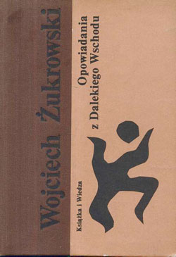

Przejdź do treści
Wojciech Żukrowski
ŻYCIE I TWÓRCZOŚĆ
Menu
☰
Strona główna
Biografia
Książki
Filmy
Wspomnienia
Archiwum
Strona główna
/
Archiwum
/
Opowiadania z dalekiego wschodu
← Powrót do galerii
Opowiadania z dalekiego wschodu
Archiwalna okładka książki Wojciecha Żukrowskiego.
